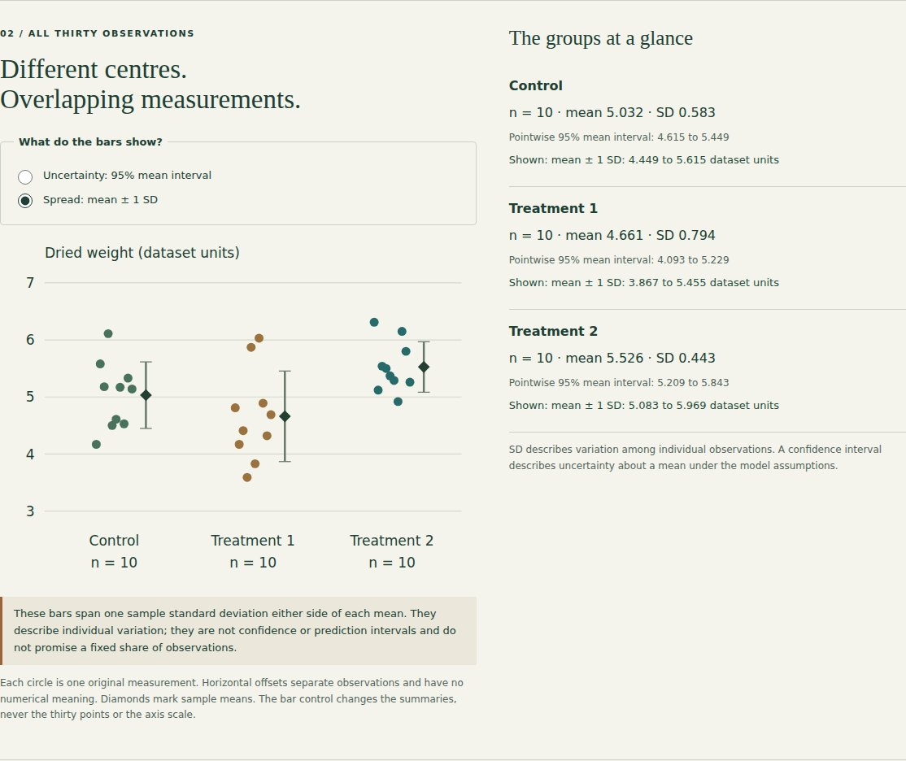
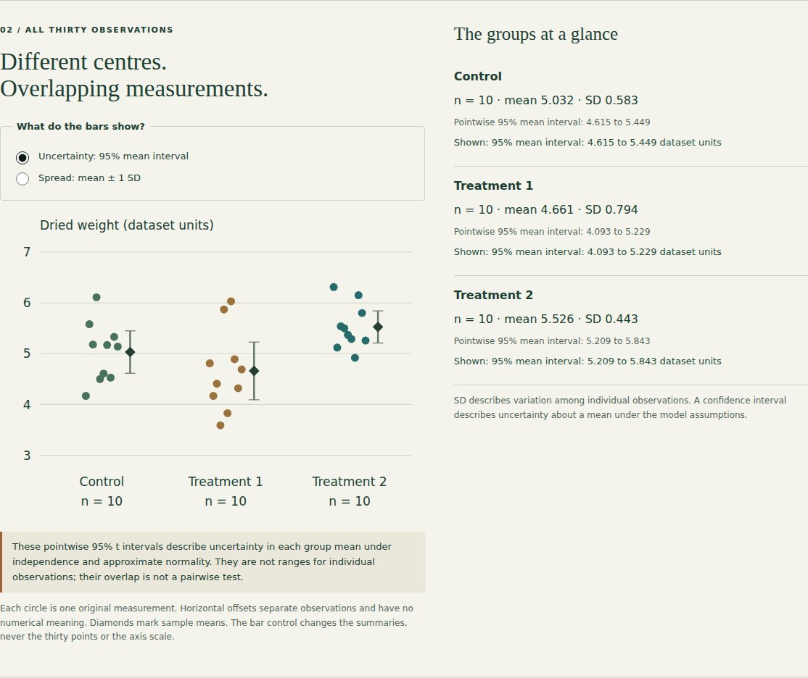
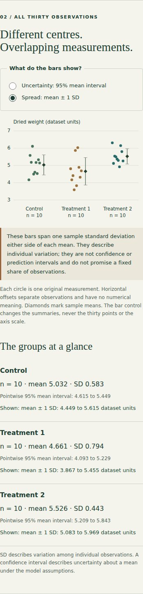
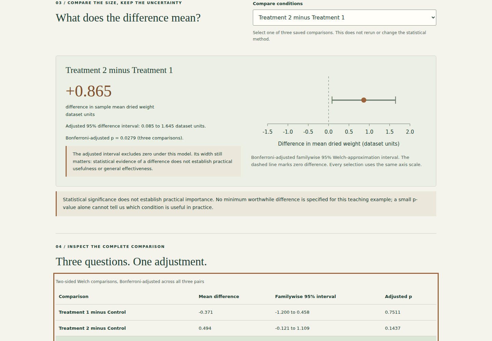

Plant growth & statistics.
Switch between observed spread and uncertainty in a mean, with the same thirty measurements and auditable bar endpoints.
Public demo: browser-based static version. See source for architecture and limitations.

What I built
Extended the existing PlantGrowth comparison lab with a native chart-bar selector that makes individual spread and uncertainty in a group mean visibly distinct.
Why it matters
Error bars can look similar while answering different questions. Visitors need to see what changes between sample variation and uncertainty about a mean without mistaking either for a treatment recommendation.
How it works
- 01
Inspect all thirty original observations. Switch the bars between mean ± one sample SD and pointwise 95% t intervals for each mean.
- 02
Read the exact active endpoints in the group summaries; the point positions, observations and common axis scale stay unchanged.
- 03
Compare the three existing Welch mean differences and Bonferroni-adjusted intervals separately. Changing the bars never changes the statistical method or pairwise results.
The technical challenge
A spread bar and a confidence interval can be visually mistaken for the same claim. The interface changes only the bars while retaining the exact same points and scale, then names the active quantity and exposes its endpoints. The explanation separates observed variation from model-based mean uncertainty, avoids fixed-coverage claims for one SD, and keeps pointwise intervals distinct from the adjusted pairwise tests.
What it demonstrates
Clear statistical communication, reproducible observed-data visualisation, independent numerical checks and accessible interaction design.
Evidence, with context.
Thirty source observations, ten per group. Sample means: control 5.032, treatment 1 4.661, treatment 2 5.526 (dataset units). Primary Welch omnibus p=0.0174; classic ANOVA p=0.0159 is a sensitivity analysis. All three Welch comparisons use Bonferroni adjustment. Treatment 2 minus Treatment 1: +0.865 dataset units, adjusted 95% interval 0.085 to 1.645, adjusted p=0.0279. The explorer preserves all measurements and methods. No practical-benefit threshold or general treatment effectiveness is established.
Verified source: ddaa7ac0dd99 · Tests and visual capture ↗






Scope and limitations
Thirty observations in a teaching dataset do not establish universal treatment effectiveness. Independence and the original experimental design cannot be verified from the CSV alone. Mean intervals assume approximate normality; Welch inference is a small-sample approximation. A p-value is neither an effect size nor the probability that the null hypothesis is true. Methods were selected for this educational investigation, not preregistered confirmatory analysis.
Visual provenance and source attribution are recorded in the evidence register ↗.
Under the surface.
Architecture, methods and improvements
The existing shared analysis objects still feed Matplotlib figures and browser data. No analytical method, source row or saved comparison changes. A native radio group changes only the displayed group endpoints; both modes use a fixed scale that includes all observations and both sets of endpoints. Exact active endpoints and clear interpretation accompany the chart. Six existing Python checks independently reconcile source rows, SDs, mean intervals and Welch/Bonferroni results. Five browser journeys additionally calculate means, sample SDs and t-interval endpoints from the original CSV, inspect SVG coordinates, preserve every point, check unchanged pairwise output and exercise keyboard/mobile interaction.
Try it locally
Install requirements.txt, run python analyze_plants.py, python -m unittest discover -p "test_*.py" -v and python build_explorer.py. Serve docs/ with a local static server. npm ci and npm run test:browser run repeatable desktop/mobile checks. Original CSV, saved calculations and coursework remain available.
The portfolio is a static GitHub Pages site. Server applications run locally; the portfolio does not collect bookings, credentials or payments.